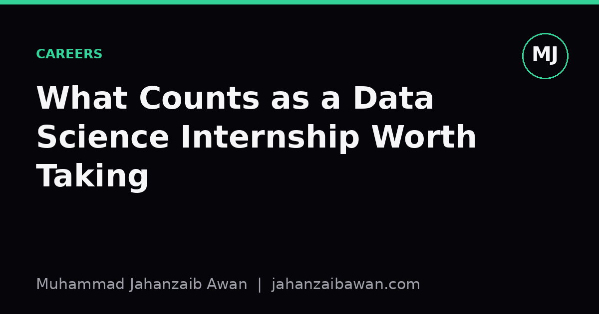

What Counts as a Data Science Internship Worth Taking
Not every internship with 'data science' in the title will teach you what you think it will. Here is how to tell the difference before you sign anything.

The title tells you almost nothing
'Data science internship' is one of the most stretched job titles going. I have seen it used for roles that are genuinely about building and evaluating models, and I have seen it used for roles that amount to formatting spreadsheets and colouring in dashboards for a manager who could not be bothered to learn a pivot table. Both get advertised with the same buzzwords: Python, SQL, machine learning, big data. The title tells you the company wants to sound modern. It does not tell you what you will actually spend eight hours a day doing.
This matters because internships are expensive in a currency that is not money. You are trading months of your life, at a point when your habits and standards are still forming, for a set of skills and a line on your CV. If the internship teaches you to run one clustering algorithm without ever asking whether the clusters mean anything, you will leave with confidence that is not backed by competence. That gap tends to surface at the worst possible moment, usually in a job interview or, worse, in production.
So the question worth asking before accepting an offer is not 'does this count as data science' but 'will this teach me to make and defend a decision under uncertainty, using data, in a way someone else can check'. That single sentence is a decent filter. Most of what follows is just unpacking it.
Signs the role will actually teach you something
The clearest positive signal is exposure to the full loop: framing a question, choosing a metric, splitting data honestly, building a baseline, then trying to beat it. If a company can describe even roughly how they evaluate whether a model is good enough to ship, that is a company that has thought about this properly. Ask in the interview: 'how do you decide a model is ready?' A vague answer about accuracy is a mild warning. A specific answer involving a held-out period, a business metric, and a threshold someone actually reviews is a good sign.
A second signal is contact with real, messy data rather than a pre-cleaned CSV someone downloaded for you. Suppose the task is predicting which customers will cancel a subscription. A weak internship hands you a tidy table with a churn column already labelled and asks you to fit a gradient boosted model. A strong one makes you construct that label yourself, deciding what 'churned' means, over what window, and whether someone who paused their account for two months but came back counts. That decision alone teaches more about data science than the model fitting does, because it forces you to think about definitions, not just parameters.
A third signal, easy to overlook, is whether anyone will push back on your results. If your first model gets 91 percent accuracy on a dataset where 89 percent of customers do not churn, a good supervisor should ask immediately whether you are just predicting the majority class. An internship where nobody in the room would catch that mistake is an internship where you will not be corrected, and correction is most of how skill develops early on. I would rather take a role with a demanding, slightly grumpy senior data scientist than one with a friendly but hands-off manager who never looks closely at my numbers.
Finally, look for internships where you touch the boundary between a notebook and something that runs unattended. Even a small task, like scheduling a script to pull data and refresh a report every morning, teaches you things no Kaggle competition will: what happens when the data source is late, when a column gets renamed upstream, when the job silently fails at 3am. That friction is unglamorous and it is exactly what separates people who can ship analysis from people who can only produce it once, by hand, while watching closely.

Red flags worth taking seriously
The most common red flag is a task description that never mentions evaluation at all. 'Build a model to predict X' with no follow-up about how success is measured usually means nobody has thought past the fitting step. In practice this often means you will hand over a model, someone will glance at a plot, say it looks good, and move on. You will have practised writing code, but not practised the harder skill of deciding whether the code's output can be trusted.
A second red flag is a role structured entirely around dashboards with no modelling, statistics, or hypothesis testing anywhere in sight. Dashboard work is not worthless, learning to communicate numbers clearly is a real skill, but it is not the same discipline as data science, and calling it that sets you up for an awkward conversation in your next interview when someone asks about your approach to cross-validation and you realise you have never needed one.
A third, subtler red flag is a company that already knows the answer it wants. If the brief is 'prove that our new feature increased engagement' rather than 'find out whether our new feature changed engagement', you are being asked to be a lawyer for a conclusion, not an analyst testing a hypothesis. You can learn from this kind of role, mostly about organisational pressure, but you will not learn much about honest evaluation, and you may pick up bad habits around selectively choosing metrics that flatter a predetermined story.
Group interviews with several other interns doing an identical, pre-packaged 'project' with a fixed dataset and fixed expected answer are worth a raised eyebrow too. There is nothing wrong with structure, but if forty interns across different offices are all being handed the same toy problem with a known right answer, the internship is closer to a training course than to real applied work. That can still be useful for beginners, but go in knowing that is what it is, rather than expecting it to resemble a job.
A practical way to decide
Before accepting, ask three direct questions: how will my work be evaluated, what happens to it after I leave, and who will check my reasoning, not just my code. The answers do not need to be impressive. They need to be specific. 'We will compare your model's predictions against last quarter's actual outcomes and a colleague will review your validation approach' is specific and honest. 'You will present at the end and everyone will be impressed' is not.
If you already have an offer and the answers are underwhelming, it is not automatically a reason to walk away, particularly early in your studies when any structured exposure to real data and real stakeholders has value. But go in with your eyes open, set your own bar for what you want to learn regardless of what is assigned, and keep a private note of every place the evaluation was sloppy so you know exactly what to fix in your own future work. The internship worth taking is not the one with the flashiest title. It is the one that will not let you get away with a model you cannot defend.